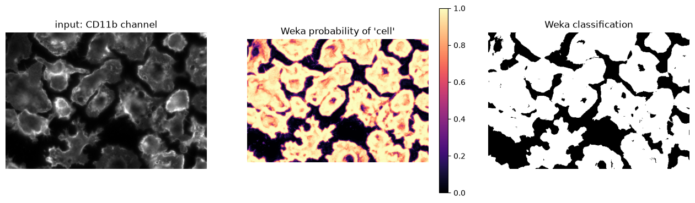
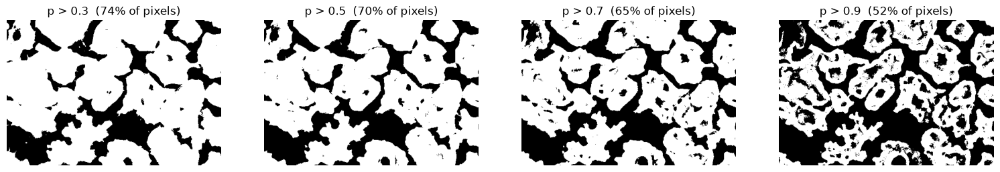
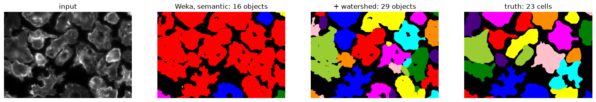
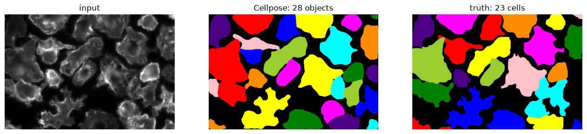
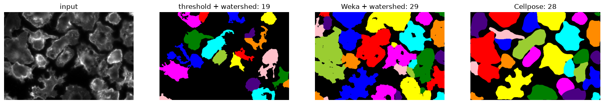

Machine learning for segmentation#
Duration ~50 min · Session Day 2, Python notebooks
On day 1, a threshold worked reasonably well for nuclei but struggled with the cell channel. In Fiji, you trained a pixel classifier from pixels marked as cell or background. Here we will inspect its output in Python and compare it with Cellpose, a model trained on a larger collection of cell images.
This notebook covers
loading and interpreting a Weka probability map
what a pixel classifier fundamentally cannot do
running Cellpose, and tuning its one important parameter
when deep learning is worth the trouble, and when it is not
Data: data/bbbc020/, and the exports from the Fiji practical in
data/bbbc020/weka/.
1. The Fiji classifier, in Python#
import numpy as np
import tifffile
import matplotlib.pyplot as plt
from skimage.measure import label
from skimage.color import label2rgb
from course import DATA, show
FIELD = "24h_2"
image = tifffile.imread(DATA / "bbbc020" / "images" / f"{FIELD}_cells.tif")
truth = tifffile.imread(DATA / "bbbc020" / "gt" / f"{FIELD}_cells_labels.tif")
# If you exported your own in E4, point this at results/weka/ instead.
weka_dir = DATA / "bbbc020" / "weka"
probability = tifffile.imread(weka_dir / f"{FIELD}_cells_probability.tif")
classified = tifffile.imread(weka_dir / f"{FIELD}_cells_classified.tif")
print("image :", image.shape, image.dtype)
print("probability :", probability.shape, probability.dtype, f"range {probability.min():.2f}-{probability.max():.2f}")
print("classified :", classified.shape, classified.dtype, "values", np.unique(classified))
image : (348, 512) uint8
probability : (2, 348, 512) float32 range 0.00-1.00
classified : (348, 512) uint8 values [0 1]
The probability map has an extra first axis of length 2: one map per class. Weka reports, for every pixel, its confidence that the pixel belongs to each class. The classified image is just that, argmaxed: whichever class won.
Before using the probability map, check which index represents which class.
# Do NOT assume index 0 is the class you care about. Check it against something
# you already know - here, that stained cells are brighter than background.
for i in range(probability.shape[0]):
predicted = probability[i] > 0.5
print(f"probability[{i}]: covers {predicted.mean():5.1%} of pixels, "
f"mean image intensity there = {image[predicted].mean():5.1f}")
print()
print(f"whole-image mean intensity = {image.mean():.1f}")
probability[0]: covers 29.7% of pixels, mean image intensity there = 9.9
probability[1]: covers 70.3% of pixels, mean image intensity there = 72.2
whole-image mean intensity = 53.6
Index 1 sits on the bright pixels, so that is the cell class. Assuming index 0 would invert every result from here on, and would still produce perfectly reasonable-looking plots, which is the dangerous part.
Class order comes from the order the classes were created in Fiji, and nothing in the file records which is which. It has to be checked against something already known.
CELL = 1
fig, axes = plt.subplots(1, 3, figsize=(16, 4.5))
show(image, title="input: CD11b channel", ax=axes[0])
im1 = axes[1].imshow(probability[CELL], cmap="magma", vmin=0, vmax=1)
axes[1].set_axis_off(); axes[1].set_title("Weka probability of 'cell'")
plt.colorbar(im1, ax=axes[1], fraction=0.046)
show(classified == CELL, title="Weka classification", ax=axes[2])
plt.show()

The probability map is the more informative of the two. Bright means “confident this is cell”, dark means “confident this is background”, and values around 0.5 near cell edges indicate uncertainty. A binary mask no longer shows that uncertainty.
The classified image throws that away by taking whichever class scored above 0.5. Keeping the probability leaves the cut-off open to be chosen later.
# The cut-off is yours to choose. It is not automatically 0.5.
fig, axes = plt.subplots(1, 4, figsize=(19, 4))
for ax, t in zip(axes, [0.3, 0.5, 0.7, 0.9]):
mask = probability[CELL] > t
show(mask, title=f"p > {t} ({mask.mean():.0%} of pixels)", ax=ax)
plt.show()

2. Semantic and instance segmentation#
weka_mask = classified == CELL
weka_labels = label(weka_mask)
print("annotated cells :", truth.max())
print("Weka objects :", weka_labels.max())
annotated cells : 23
Weka objects : 16
Twenty-three cells in the annotation. Sixteen objects from Weka.
This is worth naming properly, because the distinction runs through the rest of the course:
Semantic segmentation answers “what kind of thing is this pixel?”. Weka gives exactly this: every pixel is labeled cell or background, and that is all.
Instance segmentation answers “which object is this pixel part of?”: cell number 7 rather than merely “a cell”.
Weka is a pixel classifier. It considers each pixel more or less on its own, so it has no concept of an object at all. When two cells touch, every pixel in both is correctly labeled “cell”, and connected-component labeling then quite reasonably calls the result one object. The classifier did its job; its job is just not the one needed here.
The tool for turning semantic into instance has already appeared: the
watershed from 02_image_processing.
from scipy.ndimage import distance_transform_edt
from skimage.segmentation import watershed
distance = distance_transform_edt(weka_mask)
print("largest distance-to-edge:", round(distance.max(), 1), "px")
# Same recipe as notebook 02: seeds are the cores of the mask, and the cut-off
# is roughly the minimum object radius we insist on. These cells are far larger
# than nuclei, so the cut-off has to be far larger too.
for t in [5, 10, 15, 20, 25]:
print(f"distance > {t:2d} -> {label(distance > t).max():2d} seed(s)")
largest distance-to-edge: 59.2 px
distance > 5 -> 17 seed(s)
distance > 10 -> 29 seed(s)
distance > 15 -> 40 seed(s)
distance > 20 -> 30 seed(s)
distance > 25 -> 15 seed(s)
seeds = label(distance > 10)
weka_instances = watershed(-distance, seeds, mask=weka_mask)
fig, axes = plt.subplots(1, 4, figsize=(19, 4.5))
show(image, title="input", ax=axes[0])
axes[1].imshow(label2rgb(weka_labels, bg_label=0)); axes[1].set_axis_off()
axes[1].set_title(f"Weka, semantic: {weka_labels.max()} objects")
axes[2].imshow(label2rgb(weka_instances, bg_label=0)); axes[2].set_axis_off()
axes[2].set_title(f"+ watershed: {weka_instances.max()} objects")
axes[3].imshow(label2rgb(truth, bg_label=0)); axes[3].set_axis_off()
axes[3].set_title(f"truth: {truth.max()} cells")
plt.show()

The watershed pulls the merged blobs apart, and promptly overshoots, landing above the annotation rather than below it.
Notice how sensitive it is. For the nuclei in notebook 02 any cut-off from 5 to 8 gave the same answer; here the count swings between 15 and 40 as the cut-off moves, and not even monotonically. There is no plateau to sit on, which means any value chosen here is a choice rather than something the data supports.
A pixel classifier followed by a watershed can give a plausible count, but here the result depends strongly on the seed parameter. We will now try a method that produces object labels directly.
Shallow vs deep, in one paragraph
Weka is shallow learning: the features are chosen by hand (Gaussian blur, edges, texture at various scales) and it learns how to weigh them. A deep network learns the features too, from data, which is why it needs a great deal of data, and why using one someone else already trained is usually the sensible move.
3. Cellpose#
Cellpose is a deep model trained on a large, varied collection of cell images. Two things make it practical here:
It outputs instances, not a pixel mask: touching cells come out separated.
It generalises. It runs below on images it has never seen, with no additional training.
from cellpose import models
# `cyto` is the general cell model; there is also a `nuclei` model.
model = models.Cellpose(model_type="cyto", gpu=False)
# diameter=None asks Cellpose to estimate object size itself.
masks, flows, styles, diameter = model.eval(image, diameter=None, channels=[0, 0])
print(f"estimated diameter : {diameter:.0f} px")
print(f"objects found : {masks.max()}")
print(f"annotated : {truth.max()}")
estimated diameter : 65 px
objects found : 28
annotated : 23
fig, axes = plt.subplots(1, 3, figsize=(16, 4.5))
show(image, title="input", ax=axes[0])
axes[1].imshow(label2rgb(masks, bg_label=0)); axes[1].set_axis_off()
axes[1].set_title(f"Cellpose: {masks.max()} objects")
axes[2].imshow(label2rgb(truth, bg_label=0)); axes[2].set_axis_off()
axes[2].set_title(f"truth: {truth.max()} cells")
plt.show()

The cells are separated: that is the thing Weka could not do.
But look at the count. Cellpose found considerably more objects than the annotation has, and the reason why matters. Two possibilities, and they call for opposite responses:
Cellpose is over-segmenting, splitting single cells in two.
Cellpose is finding real cells that the annotator did not outline.
Both are happening here. The BBBC020 cell annotations are known to be incomplete: on this field about 83% of the nuclei have a corresponding cell outline, and the rest of the cells are simply unlabelled. So some of that excess is real.
A prediction without a matching annotation is not necessarily a false detection when annotations are incomplete. Inspect such objects in the image.
4. The one parameter that matters#
for d in [None, 20, 40, 80]:
m, _, _, est = model.eval(image, diameter=d, channels=[0, 0])
label_txt = f"auto ({est:.0f})" if d is None else str(d)
print(f"diameter = {label_txt:>10} -> {m.max():3d} objects")
diameter = auto (65) -> 28 objects
diameter = 20 -> 36 objects
diameter = 40 -> 30 objects
diameter = 80 -> 27 objects
diameter tells Cellpose how big it should expect objects to be, and it rescales
the image accordingly. Get it badly wrong and results collapse: too small and
cells shatter into fragments, too large and neighbours merge.
The automatic estimate is usually decent, but it is an estimate. If a Cellpose result looks wrong, this is the first thing to check, and it can be checked directly by measuring a few cells in Fiji and seeing whether the number is plausible.
5. Three methods, side by side#
from skimage.filters import threshold_otsu, gaussian
from skimage.morphology import remove_small_objects
from scipy.ndimage import binary_fill_holes
def classical(img, sigma=1, max_size=100, seed_distance=15):
"""Yesterday's pipeline: smooth, threshold, clean, split."""
smoothed = gaussian(img, sigma=sigma, preserve_range=True)
mask = binary_fill_holes(smoothed > threshold_otsu(smoothed))
mask = remove_small_objects(mask, max_size=max_size)
d = distance_transform_edt(mask)
return watershed(-d, label(d > seed_distance), mask=mask)
threshold_labels = classical(image)
print(f"{'method':22s} {'objects':>8s} (truth: {truth.max()})")
print("-" * 34)
print(f"{'threshold + watershed':22s} {threshold_labels.max():8d}")
print(f"{'Weka + watershed':22s} {weka_instances.max():8d}")
print(f"{'Cellpose':22s} {masks.max():8d}")
method objects (truth: 23)
----------------------------------
threshold + watershed 19
Weka + watershed 29
Cellpose 28
fig, axes = plt.subplots(1, 4, figsize=(19, 4.5))
show(image, title="input", ax=axes[0])
for ax, (name, result) in zip(axes[1:], [
("threshold + watershed", threshold_labels),
("Weka + watershed", weka_instances),
("Cellpose", masks),
]):
ax.imshow(label2rgb(result, bg_label=0)); ax.set_axis_off()
ax.set_title(f"{name}: {result.max()}")
plt.show()

Three plausible-looking results and three different counts, none of them equal to the annotation.
Cellpose appears to separate neighbouring cells better, while the threshold result contains small specks. Object counts cannot establish which segmentation is better: two results can have the same count and label different cells.
In 04_segmentation_metrics, you will compare these results with annotations
using pixel and object scores.
6. Does the hard channel need all this?#
# The nuclei, for comparison - the channel that thresholded fine yesterday.
nuclei = tifffile.imread(DATA / "bbbc020" / "images" / f"{FIELD}_nuclei.tif")
nuclei_truth = tifffile.imread(DATA / "bbbc020" / "gt" / f"{FIELD}_nuclei_labels.tif")
nuclei_model = models.Cellpose(model_type="nuclei", gpu=False)
nuclei_masks, _, _, _ = nuclei_model.eval(nuclei, diameter=None, channels=[0, 0])
nuclei_classical = classical(nuclei, sigma=1, max_size=40, seed_distance=5)
print(f"{'':22s} {'threshold':>10s} {'Cellpose':>10s} {'truth':>7s}")
print("-" * 52)
print(f"{'nuclei channel':22s} {nuclei_classical.max():10d} {nuclei_masks.max():10d} {nuclei_truth.max():7d}")
print(f"{'cells channel':22s} {threshold_labels.max():10d} {masks.max():10d} {truth.max():7d}")
threshold Cellpose truth
----------------------------------------------------
nuclei channel 21 21 22
cells channel 19 28 23
The methods give similar counts for nuclei but differ on the cell channel. Nuclei are compact and bright against the background, so thresholding already works reasonably well. Cell boundaries are less distinct, and neighbouring cells often touch.
Start with a method you can explain and check. If it misses objects or gives poor boundaries, try another method and compare the results with annotations. The next notebook makes that comparison.
Recap#
learns |
outputs |
separates touching objects |
|
|---|---|---|---|
threshold |
nothing |
pixels |
no (needs a watershed) |
Weka |
weights on hand-chosen features |
pixels |
no, structurally |
Cellpose |
features and weights, from data |
objects |
yes |
These comparisons used images and object counts. Next, 04_segmentation_metrics
applies pixel and object metrics to the same results.